El control de versiones mantiene un registro claro de todos los cambios realizados en un proyecto, facilitando su seguimiento.
Facilita la colaboración entre múltiples desarrolladores trabajando simultáneamente en el mismo proyecto.
Permite revertir errores fácilmente a versiones anteriores sin perder información importante.
Ayuda a mantener el proyecto organizado, facilitando la gestión de diferentes versiones y funcionalidades.
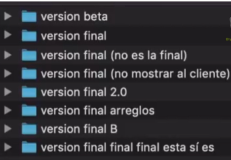
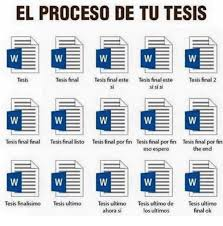
Así se ve un proyecto sin control de versiones: nombres de carpeta como bitácora de cambios.
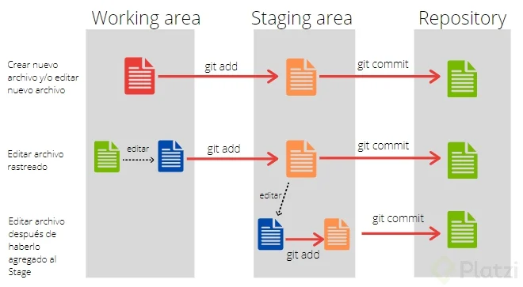
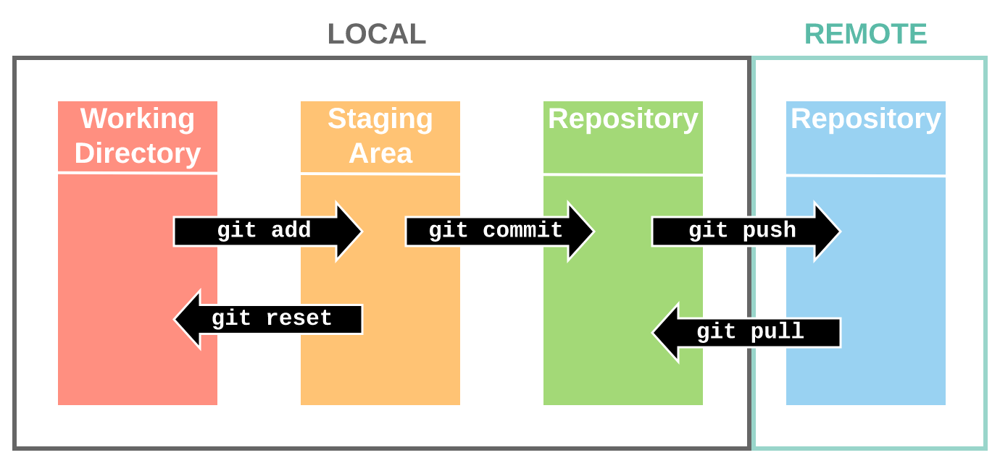
git config --global user.name "Tu Nombre" git config --global user.email "tu_correo@email.com"
Los forks permiten a los desarrolladores crear copias independientes del código para trabajar sin afectar el proyecto original.
Las pull requests facilitan la integración de cambios propuestos, revisados y aprobados, para mantener la calidad del código.
Las revisiones aseguran que el código cumpla con los estándares y mejoran la colaboración y el aprendizaje en equipo.
El ciclo de trabajo típico con Git combina el área de trabajo local, el área de preparación (staging) y el repositorio, y luego sincroniza con el repositorio remoto.
git clone <url> # copia un repositorio remoto a tu máquina git add <archivo> # agrega cambios al área de preparación (staging) git commit -m "mensaje" # guarda los cambios preparados en el repositorio local git status # muestra el estado de los cambios locales vs. el remoto git push # envía los commits locales al repositorio remoto
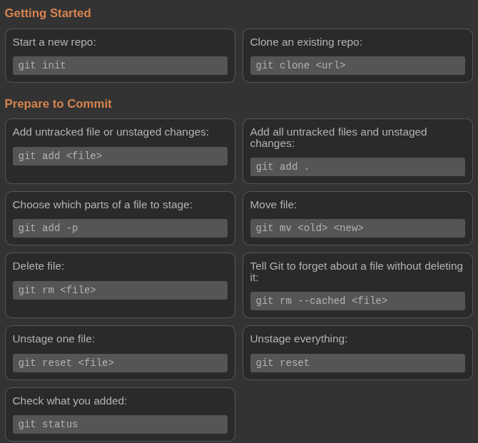
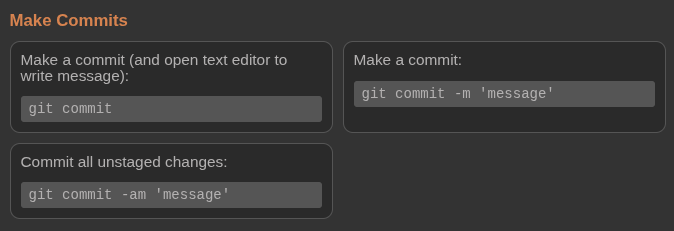
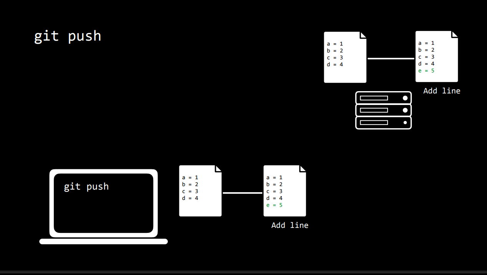
Las ramas permiten desarrollar nuevas funcionalidades sin afectar la versión principal, asegurando estabilidad.
El uso de ramas facilita la organización del código y la gestión de proyectos complejos.
Las ramas permiten experimentar y probar cambios sin riesgo para el código principal.
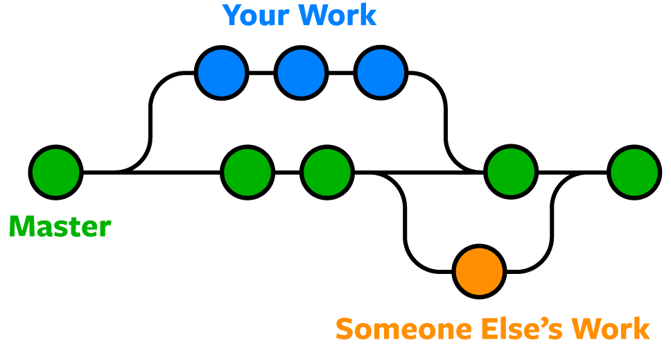
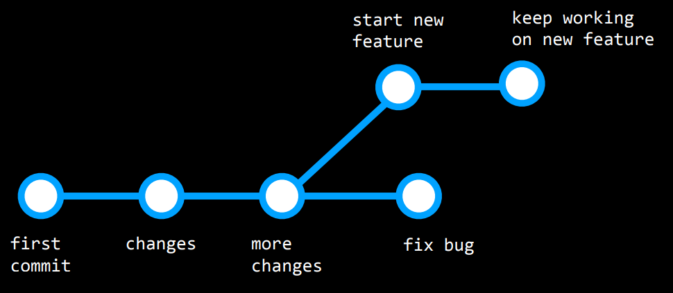
<<<<<<<, ======= y >>>>>>>.git log git reset --hardgit reset --hard origin/master
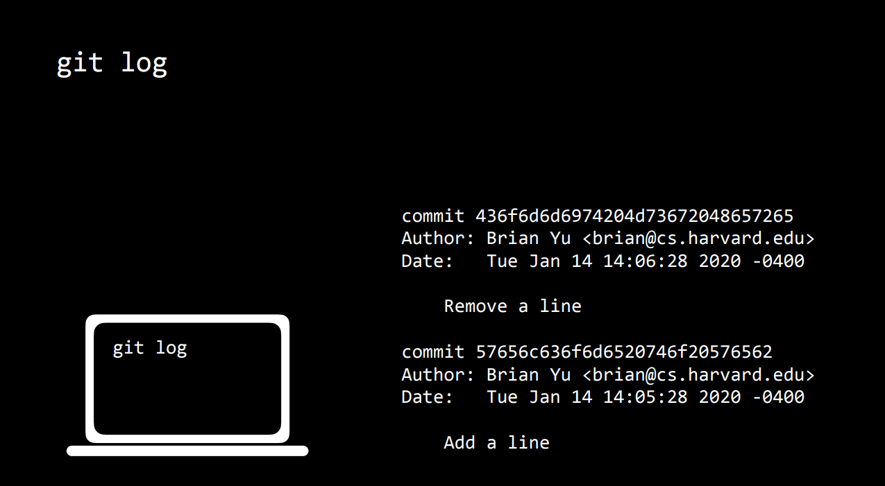
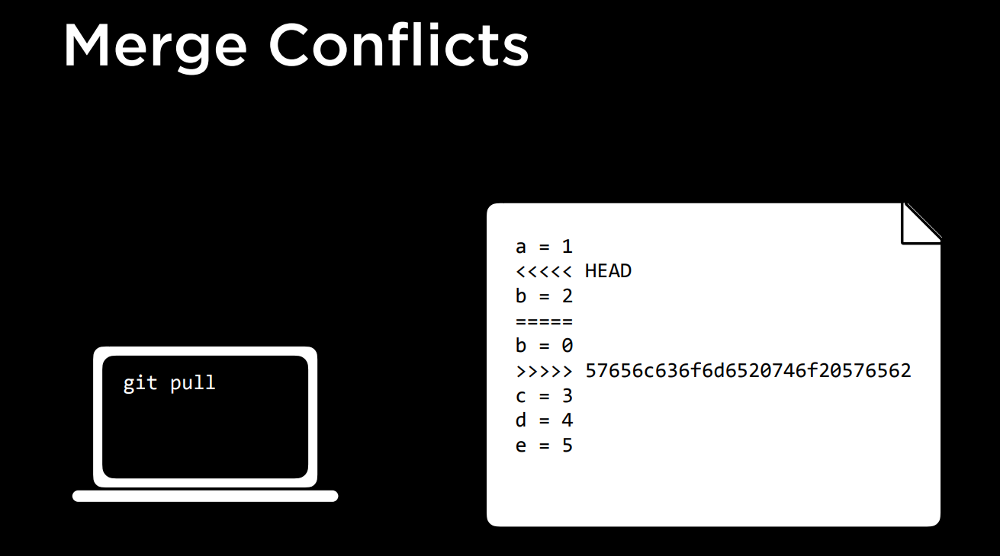
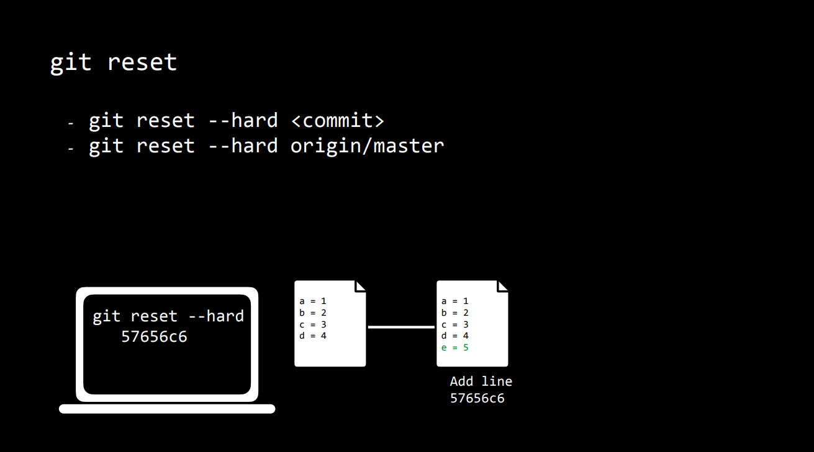
Usar nombres descriptivos para facilitar la identificación y evitar confusiones en el equipo.
Mantener ramas pequeñas y actualizadas para simplificar las integraciones y revisiones.
Realizar integraciones frecuentes para minimizar conflictos y asegurar un flujo de trabajo fluido.
Los conflictos surgen cuando varios desarrolladores cambian las mismas líneas de código a la vez, causando discrepancias.
La ausencia de actualizaciones frecuentes provoca que los cambios locales se solapen con modificaciones remotas.
Modificar archivos comúnmente utilizados por varios desarrolladores incrementa el riesgo de conflictos de merge.
Un fork permite copiar un repositorio público para trabajar de forma independiente sin afectar el original.
Los desarrolladores pueden realizar cambios propios y mejoras en su fork del proyecto.
Los cambios pueden ser propuestos para integrarse en el proyecto original mediante solicitudes de extracción (pull requests).